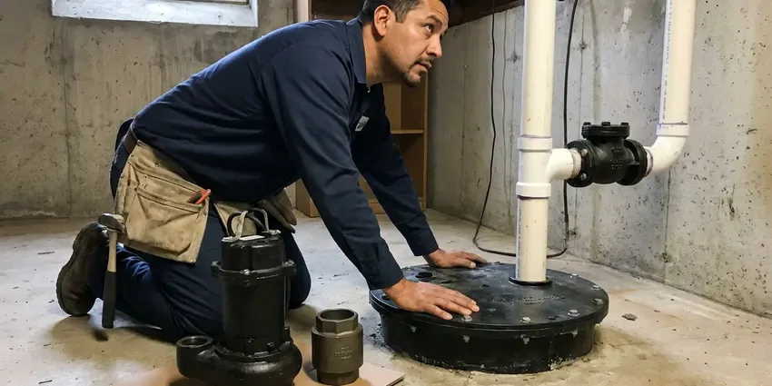

PEX Pipe Installation in Greer, SC
Adding a room? KBN Plumbing roughs in PEX to the right heights in Greer, SC and tests it before the walls close.
- Water Back Each Evening
- Local Crews
- Permit Handled
- PEX-A and PEX-B Systems

Quit Patching Old Pipe in Greer, SC
You keep running water most nights while the repipe is underway.
Getting Off Old Copper and Galvanized in Greer, SC
KBN Plumbing installs both PEX-A expansion systems and PEX-B crimp systems, picked by job and budget. Homes built in the 1980s and early 1990s may still have gray polybutylene supply lines, which are known to fail and are worth replacing. Under-slab copper that keeps leaking gets abandoned. We run new PEX through the attic and down the interior walls to each fixture, and the slab never gets broken open.
Work we handle every week:
- Whole-home repipes from main shutoff to every fixture
- PEX-A expansion systems (ProPEX style)
- PEX-B crimp ring and cinch clamp connections

Additional Plumbing Installation Services in Greer, SC
We install water heaters, pumps, lines, and fixtures across Greer, SC with careful, permitted work that passes inspection the first time.


Customers
Why Choose KBN Plumbing for PEX Pipe Installation in Greer, SC?
PEX does not pit or scale the way copper and galvanized do, and that matters most in homes on mineral-heavy water. Most municipal water in South Carolina comes from rivers and reservoirs, so it tends to run fairly soft and leaves less scale than in many other states. We also size every line properly. A three-quarter inch trunk feeding half-inch branches keeps the shower steady when someone starts the dishwasher across the house.
- Long Warranties, Pipe makers warranty matched pipe and fittings for 25 years or more.
- Lower Install Cost, PEX costs less per foot than copper and takes fewer labor hours.
- Tidy Worksite, Floors covered, dust contained, and we patch every opening.
Citywide Coverage
Greer homes of every age end up on our repipe list, from early ranch houses on galvanized to newer builds with failing poly. Each one gets a route planned around its own attic, crawlspace and wall layout before we quote a price, since two houses on the same street can route very differently. We do not use one plan for all.
Experienced Team
Every plumber at KBN Plumbing works on repairs and full repipes alike. The same person who fixes a leaking manifold valve on a Tuesday might lead a four-day repipe the next week, so they know how the whole system fits together. It shows on tricky calls.
Safety-First Approach
Our crews follow South Carolina plumbing code on all PEX work, plus each manufacturer's installation rules. Code sets the minimum, but pipe makers add their own requirements on bend radius, sun exposure and distance from heat, and following both is what keeps the system safe and the warranty in force. Both matter.
Trusted Certified Greer Plumbing Services Professionals
At KBN Plumbing, we are proud to offer certified plumbing services throughout Greer, SC. Those papers on the wall mean something. Every repair, install and maintenance visit follows strict safety and quality rules, and the plumbers doing the work carry recognized industry credentials.
Call Us Now PHCC Plumbing Contractor Recognition
PHCC Plumbing Contractor Recognition Better Business Bureau (BBB) Accreditation
Better Business Bureau (BBB) Accreditation Angi Certified Pro
Angi Certified Pro ISO 9001 Quality Management Certification
ISO 9001 Quality Management CertificationPEX Water Line Work We Do in Greer, SC
Full Home PEX Repiping in Greer
Galvanized steel rusts from the inside out. After 40 or 50 years the bore is so choked with scale that a half-inch line delivers a trickle, and the water comes out tinted brown after it sits overnight. We replace every foot of it with PEX. Pressure comes back at the fixtures and the rust stops.

PEX-A, PEX-B, and PEX-C Systems in Greer, SC
There are three grades of PEX, named for how the plastic is cross-linked at the factory. PEX-A is the most flexible and joins with expansion rings, PEX-B is stiffer and joins with crimp rings or cinch clamps, and PEX-C sits closer to B in feel. Every one is listed for potable water. Pipe, fittings and tools come from the same maker on our jobs, which keeps the warranty valid.
PEX Repipe Cost Comparison in Greer, SC
Price on a repipe comes down to a few things: bathroom count, square footage, how many stories, and how easy the attic and walls are to work in. PEX usually beats copper on price because the pipe costs less and a crew finishes in two to four days, not a full week. Patching is sometimes quoted on its own line. Ask and we will price all three, PEX-A, PEX-B and copper, side by side.
Leak Repair with PEX in Greer, SC
A single bad section is not always a reason to repipe. We can cut out a split or corroded stretch of copper, transition to PEX with a listed fitting, and have the water back on in an hour or two. It is fine for an isolated leak. Once you are on the third patch, we will tell you straight whether the rest of the copper is heading the same way.
Emergency PEX Pipe Services in Greer, SC
A burst line in the middle of the night starts with the main shutoff. Close it if you can, then call (864) 588-3813 and we will walk you through draining the system while a plumber drives over in Greer, SC. The fix is usually fast with PEX. We remove the damaged stretch and splice new pipe in, frequently inside an hour.
PEX-B Crimp and Clamp Systems in Greer
PEX-B is stiffer, costs less per foot, and joins with copper crimp rings or stainless cinch clamps over brass or poly-alloy fittings. Since a crimp is only as good as the tool that made it, every ring gets a go/no-go gauge check, and any ring that fails gets cut off and redone. It is a five-second check. Skipping it causes most crimp leaks.
PEX-A vs. PEX-B Installation in Greer
Homeowners ask us which one is better, and it really depends on the house. PEX-A makes tighter bends, can be heat-fixed if it kinks, and its fittings flow better, while PEX-B is cheaper and its crimps hold just as well when each one is gauged. Either one lasts for decades. For tight attics we lean toward PEX-A.

Remodel and Addition PEX Rough-In in Greer
Rough-in heights matter more than people think. If the shower valve sits two inches low or the vanity stubs miss the cabinet, the wall gets reopened after tile, and that costs time and money. We check heights with your contractor before drilling. The test happens before drywall goes up.
PEX Installers Near You in Greer, SC
Our crews repipe homes in Greer most weeks of the year, so we have seen most of the local house styles. Split-levels with a finished basement, single-story slabs with low attics and two-story homes with stacked bathrooms each have their own best route, and knowing that ahead of time keeps wall cuts small. That cuts down on surprises. The schedule we give you holds.
Had another leak? Set up a no-cost walk-through with our local crew. We look at the pipe you have now, check attic and crawlspace access, count fixtures, and then put a written price and a day-by-day schedule in your hands before we leave. The number is in writing. Most estimates take under an hour.
KBN Plumbing at a Glance
- Fully licensed plumbing team covering Greer, SC
- 24/7 emergency service with same-day scheduling
- Clear written estimates, no hidden fees
- 4.8-star rated by 596+ South Carolina customers
Greer Map
Greer Information
- Population
- 44,387
- Area codes
- Local
- Service area
- Greer and communities within 40 miles
- Nearby
- Greenville, Spartanburg, Rock Hill, Fort Mill
PEX does not rust or scale up like metal pipe, and it flexes a little when water inside it freezes, which is why so many Greer, SC repipes use it.
Expert Services
Reach out to KBN Plumbing for honest, reliable plumbing from people who know the trade in Greer, SC.
Our Specialized Plumbing Services in Greer, SC
At KBN Plumbing, we handle the full list of plumbing services across Greer, SC. We go from leak detection all the way to full system installations, for homes and commercial buildings, and we do it quickly at a fair price. Here are the core services we offer:


From Estimate to Pressure Test, PEX Work in Greer, SC
Most of the planning happens before we cut any drywall.
Call for an Estimate
Call (864) 588-3813 and describe the leak, pressure problem or remodel. We set a time that works for you.
Walk-Through
A plumber visits your Greer home, counts fixtures and checks the attic and crawlspace. A written quote is in your hands before we go.
Install Day
We cover floors, open small access holes and run new PEX to every fixture. Water is restored most evenings.
Frequently Asked Questions About PEX Pipe Installation in Greer
Most whole-home PEX repipes in Greer, SC fall in the $3,000 to $10,000 range. Smaller work, such as a line for a new bath or swapping out one bad section, usually costs $500 to $2,000 depending on access. The quote is written. It includes permit and patching unless we say otherwise.
For most repipes, yes. It resists scale and corrosion and uses fewer joints, while copper lasts but can develop pinholes in certain water and costs more to put in. Each has its place.
We back our labor with a written warranty, and the manufacturer backs the pipe and fittings. Terms are spelled out on the quote.
Low pressure at every tap, brownish water first thing in the morning, and a third or fourth leak in a few years. Gray polybutylene pipe or old galvanized steel in the house is a sign on its own, even before anything has leaked, because both are known to fail with age. A quick look tells us.
Only slightly. We cut small, targeted openings to run the pipe, usually in closets or ceilings where the patch is easy to hide, and patch them when we finish. Most homeowners are surprised by how little drywall work it takes.
Several pinhole leaks, tinted water, low pressure through the whole house, or gray poly pipe. More than one slab leak is a good reason to reroute overhead.
Fifty years is the common rating, and many installs should outlast that when kept out of sunlight and away from heat.
On a single repair, some handy homeowners do. For a full repipe or a water main, the tools, techniques and code rules add up quickly, and a missed crimp or an unsupported run can lead to water damage that costs far more than the labor you saved. Hidden leaks are the cost.
Hear From Customers Who Hired Our Plumbing Experts

Sofia M.
Two new toilets went in during one visit. The tech set them on new wax rings and swapped the old supply lines. He also noticed our bathroom faucet dripping and replaced the cartridge while he was there. No mess left behind.
Toilet Installation · Fort Mill, SC
Karen W.
After our third pinhole leak in copper, we stopped patching. KBN Plumbing gave us a written plan room by room and repiped the house in PEX while we stayed in it. The crew covered our floors every morning and cleaned up every night.
Repiping · Fort Mill, SCDiane F.
My kitchen faucet had dripped for months and I finally got tired of hearing it at night. KBN Plumbing came out the next morning, replaced the cartridge and the O rings, and tightened a loose base that was letting water under the sink.
Faucet Repair · Greer, SC
James P.
Our restaurant had a slow leak at the hand sink that was rotting the cabinet base. KBN Plumbing came in at six in the morning before prep, replaced the trap and both supply lines, and was packed up before my first cook clocked in.
Commercial Plumbing · Rock Hill, SC
Nathan E.
Our tankless heater kept throwing an error code and shutting off mid shower. The tech flushed the heat exchanger, which was full of scale, and replaced a bad flow sensor. Hot water has been steady for half a year now.
Water Heater Repair · Spartanburg, SC
Lisa C.
Water was pouring out from under the washing machine on a holiday weekend. KBN Plumbing talked me through closing the valves over the phone and had a plumber at the house within ninety minutes. It was a burst fill hose.
Emergency Plumbing · Spartanburg, SC